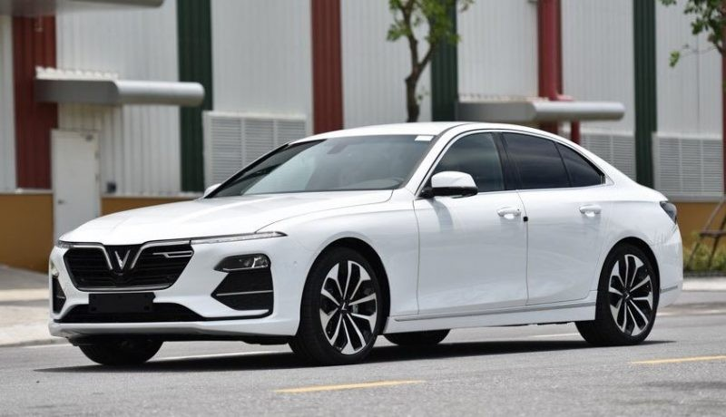
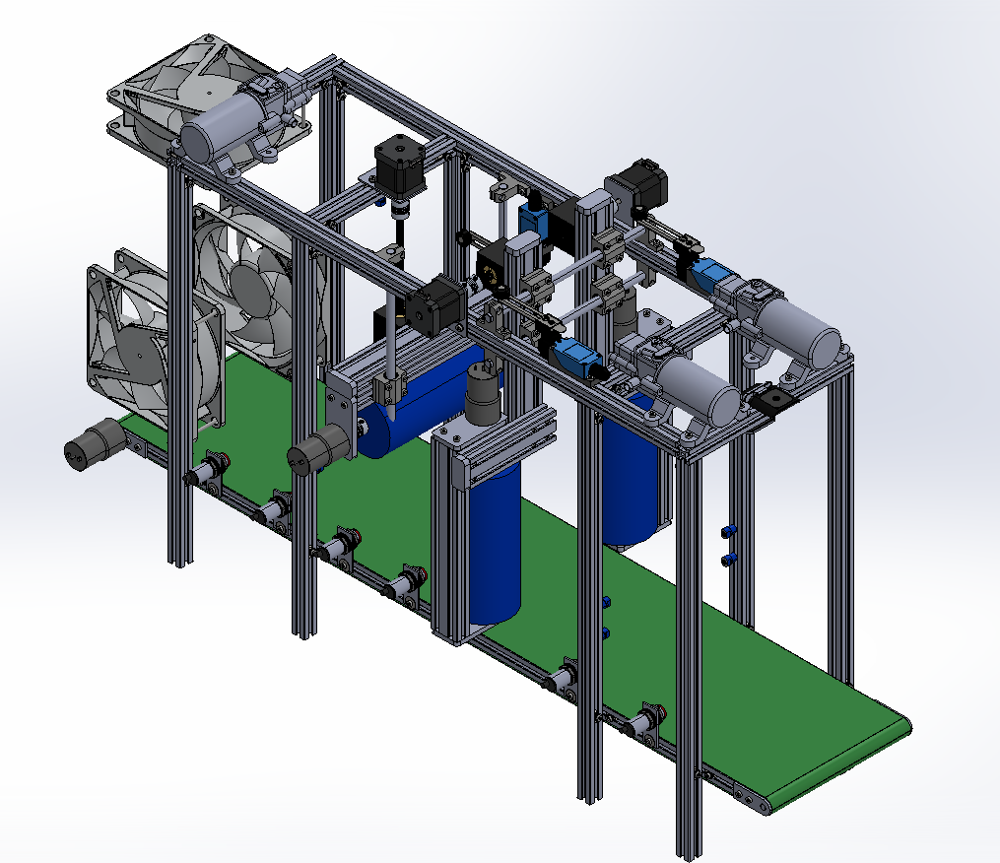
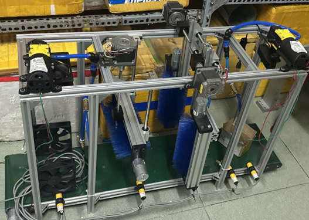
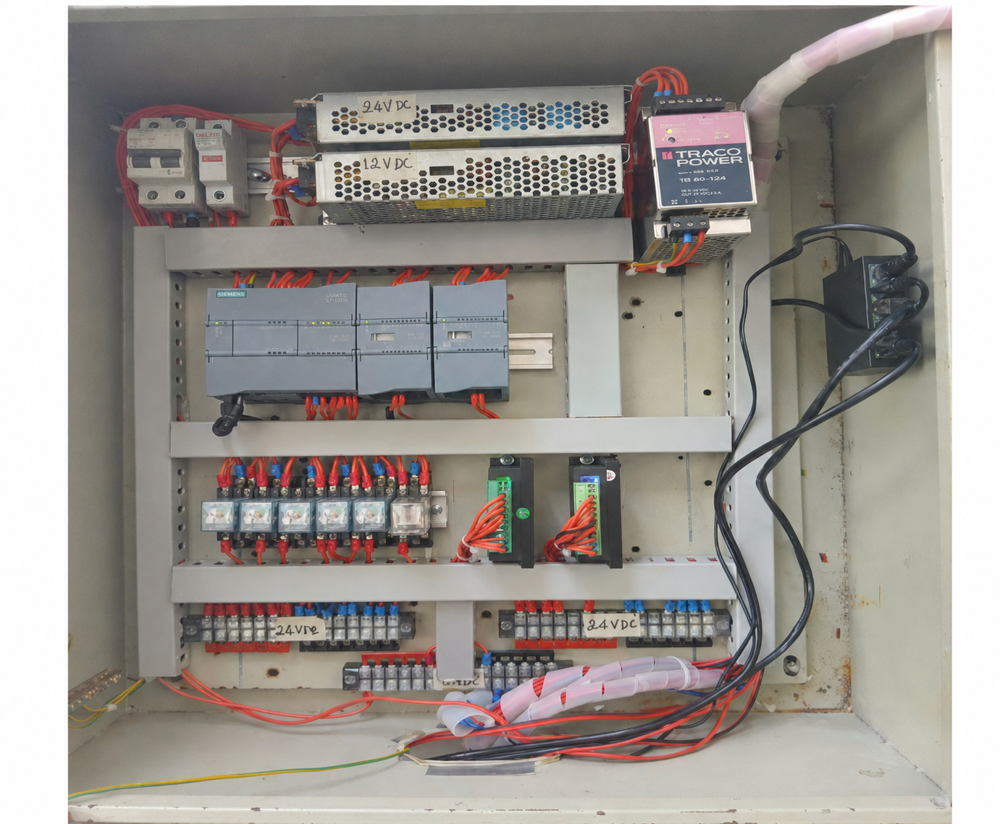

Xác định đầu vào
Camera cung cấp dữ liệu hình ảnh để hệ thống biết xe đã xuất hiện trong vùng nhận diện.
Luận văn tốt nghiệp · 2026
Hệ thống sử dụng máy ảnh để thu thập hình ảnh xe, mô hình YOLO để nhận dạng loại xe Sedan hoặc SUV, sau đó Python xử lý dữ liệu và truyền đến PLC S7-1200 thông qua Snap7/Ethernet để điều khiển mô hình rửa xe tự động.
Vấn đề
Trong mô hình rửa xe tự động, mỗi loại xe có kích thước và đặc điểm hình dáng khác nhau. Nhận diện Sedan hoặc SUV giúp hệ thống biết được xe đang đi vào vùng xử lý, và điều khiển hệ thống hoạt động theo đúng chu trình.
Camera cung cấp hình ảnh đầu vào, kết quả nhận diện được dùng làm dữ liệu tham khảo cho PLC, từ đó hệ thống giảm phụ thuộc vào thao tác thủ công.
Camera cung cấp dữ liệu hình ảnh để hệ thống biết xe đã xuất hiện trong vùng nhận diện.
Kết quả Sedan hoặc SUV được dùng làm dữ liệu tham khảo cho chu trình điều khiển trên PLC.
Hệ thống giảm phụ thuộc vào nút nhấn thủ công và tạo nền tảng cho dây chuyền thông minh hơn.
Đường ống hệ thống
Luồng dữ liệu khép kín, từ khâu thu hình bằng camera đến thao tác rửa thực tế, diễn ra qua sáu giai đoạn kết nối.
USB Camera
YOLOv8 · Sedan/SUV
OpenCV + Logic
TCP/IP · DB1
CPU Siemens
Bơm · Chổi · Rơle
Camera thu nhận hình ảnh xe đầu vào tại vùng nhận diện của mô hình rửa xe.
Thị giác máy tính
YOLOv8 xử lý từng khung hình camera và phân loại Sedan hoặc SUV theo thời gian thực, sau đó Python chỉ gửi dữ liệu sang PLC khi kết quả đủ tin cậy và ổn định.

Xe Sedan 94,2%# Kết quả đầu ra của Python
vehicle_class = "Sedan"
confidence = 94.2
send_to_plc = TrueData Transfer
Python đóng gói dữ liệu nhận diện thành bytearray và ghi vào DB1 của PLC. Khi dữ liệu đã sẵn sàng, Python bật bit data_ready. Sau khi PLC đọc dữ liệu, PLC phản hồi bằng bit plc_ack để hoàn tất quá trình truyền.
client.db_write(1, 0, packet)
data_ready → read → plc_ack
| Trường dữ liệu | Giá trị ví dụ | Vai trò |
|---|---|---|
| length | 4.50 m | Thông tin chiều dài xe |
| width | 1.80 m | Thông tin chiều rộng xe |
| height | 1.55 m | Thông tin chiều cao xe |
| Sedan/SUV | SEDAN | Nhãn nhận diện từ YOLO |
| data_ready | TRUE | Python báo dữ liệu đã sẵn sàng |
| plc_ack | TRUE | PLC xác nhận đã đọc dữ liệu |
PLC Control
PLC nhận dữ liệu từ Python, kiểm tra trạng thái truyền, xử lý logic điều khiển và kích hoạt chu trình rửa xe theo trình tự đã thiết kế.
Điều khiển bơm nước trong chu trình rửa.
Điều khiển chuyển động cơ cấu mô hình.
Đóng cắt tín hiệu cho thiết bị chấp hành.
Ghi nhận trạng thái vị trí và điều kiện vận hành.
Kích hoạt cơ cấu rửa theo trình tự tự động.
Prototype
Các phần dưới đây là vị trí đặt ảnh minh họa cho quá trình thiết kế, lắp ráp và kiểm thử mô hình.

Thiết kế 3DMô phỏng kết cấu khung, vùng đặt xe và cơ cấu rửa trước khi chế tạo.

Mô hình thực nghiệmLắp ráp mô hình rửa xe tự động để kiểm tra luồng xử lý thực tế.

Đấu nối điệnKết nối PLC, relay, cảm biến và cơ cấu chấp hành theo sơ đồ thiết kế.
Demo
Results
Mô hình kết hợp xử lý ảnh, truyền thông Python và điều khiển PLC trong cùng một hệ thống thực nghiệm.
Nhận diện được 2 loại xe: Sedan và SUV.
Truyền dữ liệu thành công từ Python sang PLC.
PLC điều khiển mô hình theo chu trình tự động.
Mô hình thực nghiệm hoạt động theo logic thiết kế.
Conclusion
Đề tài cho thấy khả năng tích hợp xử lý ảnh với hệ thống điều khiển công nghiệp. Camera và YOLO giúp nhận diện xe, Python đảm nhiệm xử lý và truyền dữ liệu, còn PLC S7-1200 thực hiện logic điều khiển mô hình rửa xe tự động.